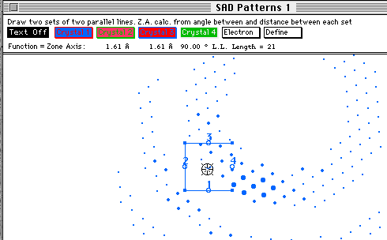
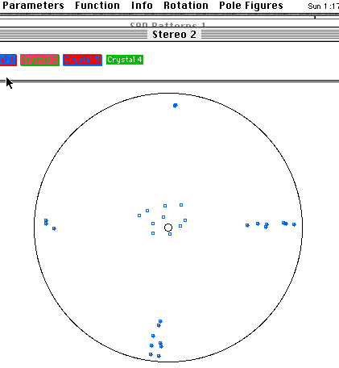

Distributed By: Virtual Labs
About The How To Section
The How To section has been added to help the user with specific
sometimes complicated tasks. It is very similar to the tutorial section
in its design and goals. The user will be asked to make frequent references
to other sections which detail actual Dialog Box and Menu usage. The following
tasks are currently treated in the How To section:
How To Create Pole Diagrams
There are two distinct methods for generating pole diagrams.
The first uses direct input of crystal orientations into a Stereogram using
numerical values input into a dialog box. This method is discussed in the
section: Input Poles
Dialog Box, and therefore, it is not covered in this section. The second
method uses the SAD Object, experimental diffraction patterns , the Stage
Object and the Zone Axis Tool-Line
Method to generate a series of Zone Axis - g-vector pairs. To obtain
accurate Pole Figures complete the following steps.
- Set up the Stage Object so
that the experimental goniometer tilts cause rotations in directions that
correspond with the calculated images.
Set a Crystal Definition to the expected experimental crystal using the
Unit Cell Dialog Box
or a Stored crystal.
Go to an SAD or CBED Object found under the heirarchical New Menu
Item.
Go to the Exp. Info Menus and set the Reference Crystal to the crystal which
corresponds to the Crystal defined in the second step.
Go to the Stage
Object and input the current goniometric settings.
Activate the Zone Axis Tool-Line
Method

Once the tool is up,move over the experimental diffraction pattern until
it corresponds with your experiment.
After setting the Zone Axis Tool to the correct orientation and d-spacings,
simply double click on the center circle in Zone Axis Tool and this will
bring up the Zone Axis Dialog
Box. Make sure the settings are correct and then click the Add
button. (This will then take you through a macro which will add the zone
axis to a stereogram.
Go to your next experimental set-up. Change the Stage Object if need be.
Reorient the Zone Axis Tool, bring up the Zone Axis Dialog Box and another
orientation to the stereogram.
After entereing the total number of orientations of interest, go to the
plotted stereograph. Select the menu item, Clear Plotted Poles under
the Pole Figure Menu. This action will remove all poles from the plotted
Stereogram but retain the information for all poles. At this point, select
the desired pole figure such as [001] or [010], these will be immediately
plotted.

Sample of an [001] Pole Figure
Author: J.ames T.
Stanley
 Desktop
Manual
Desktop
Manual
Distributed By: Virtual
Labs
Last Updated:July 6,1996